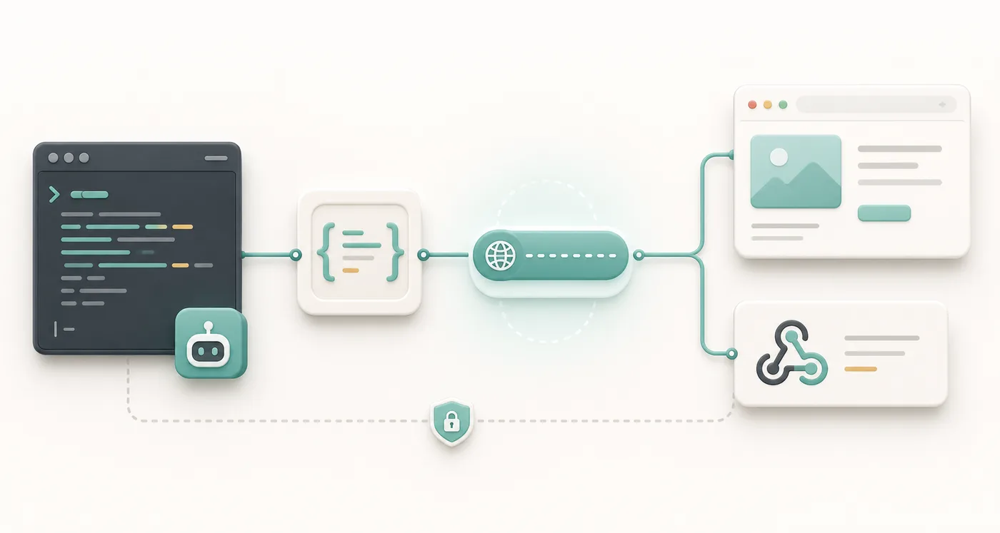

macOS
Install with one command, or choose a build below.
Install command
Release info is loading.Manual downloads
Loading...
Turn localhost into a public HTTPS link.
Portlight makes your local app reachable from the internet. If it
is on localhost:3000, expose port 3000 and share the
URL it prints.
$ portlight expose --port 3000
Exposed http://127.0.0.1:3000 as https://demo.portlight.616.pub
Press Ctrl+C to stop.Downloads
Use the install command below. Set PORTLIGHT_TOKEN or
pass --token, then run
portlight expose --port 3000.
Install with one command, or choose a build below.
Release info is loading.Install with PowerShell, or download manually.
Release info is loading.Install from the shell, or download manually.
Release info is loading.portlight update
checks for a newer release.
portlight uninstall
removes the CLI.
Agent workflows
Remote coding agents and remote-controlled browsers cannot always
reach your private localhost. Give them a portlight URL
when they need to inspect a preview, receive a callback, or call a
local service.
$ portlight skill
$ portlight expose --port 3000 --jsonUse portlight when you need a public HTTPS URL for a local HTTP service.
If portlight is missing, install it:
macOS/Linux: curl -fsSL https://portlight.616.pub/install.sh | sh
Windows PowerShell: irm https://portlight.616.pub/install.ps1 | iex
Use PORTLIGHT_TOKEN if it is already set. If the user gives you a token, pass it with --token <token> or set PORTLIGHT_TOKEN for this shell.
Start the local service first, then run:
portlight expose --port <port> --ttl 30m --json
Read the JSON ready event and use the url field. Keep the command running while the URL is needed. Stop the process, or wait for TTL, to close the URL. Do not print the token in logs.portlight skill for the agent-facing guide.--json when the agent should read the URL.--ttl when the link should expire automatically.
What it is for
Previews, webhooks, demos, and agents often need a real HTTPS URL. Portlight gives one to the app already running on your machine.
Open a local app on another device or share it with someone.
Receive callbacks while your app runs on your machine.
Create a readable temporary URL for a short session.
Return JSON when CI or an agent needs to capture the URL.
Usage
Start your app as usual. Keep the portlight command running while
the URL should work. Use --ttl or stop the command to
close the URL.
# macOS / Linux
export PORTLIGHT_TOKEN=<token>
# Windows PowerShell
$env:PORTLIGHT_TOKEN='<token>'
# Or pass it directly
portlight expose --token <token> ...portlight expose --port 3000 --ttl 30mhttps://name.portlight.616.pubSelf-hosting
Use the hosted server for quick work, or deploy your own endpoint for team and private infrastructure. Expose only services you intend to share.